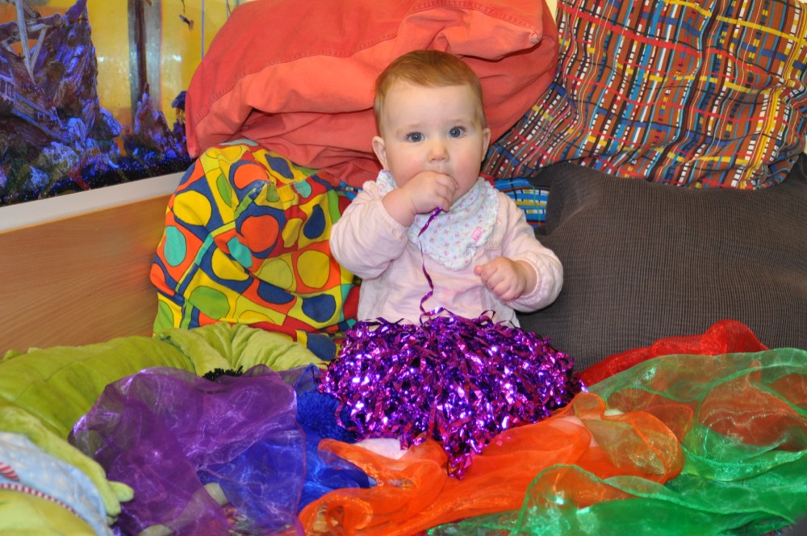
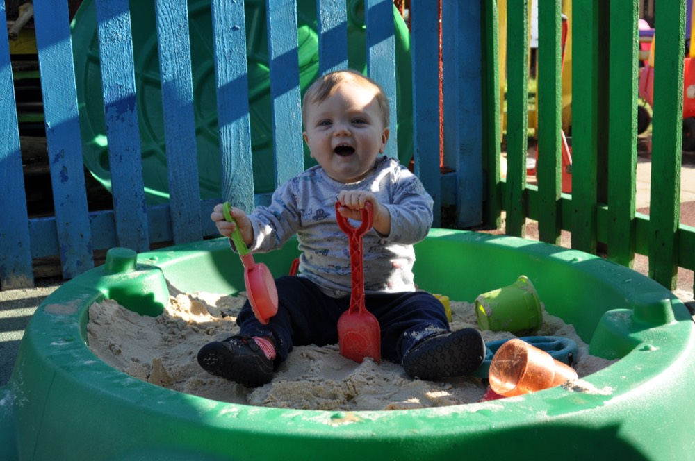
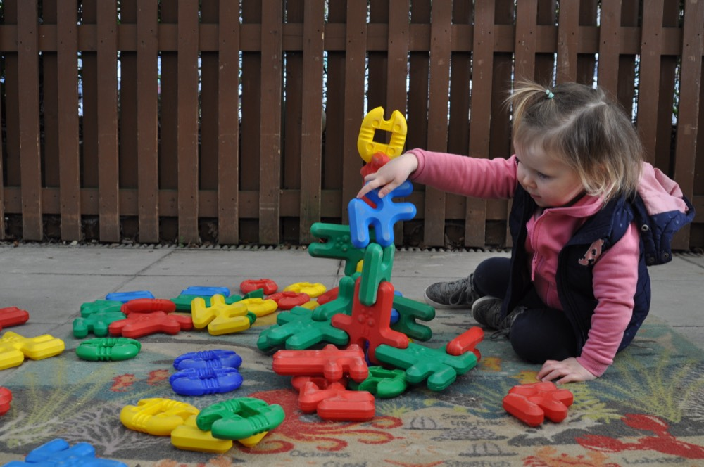
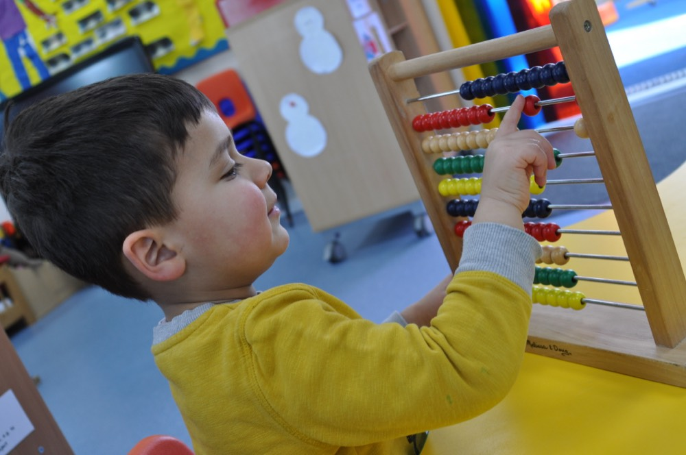
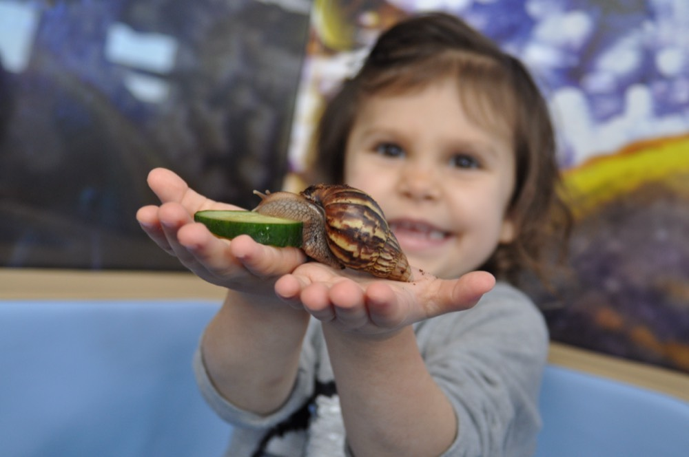
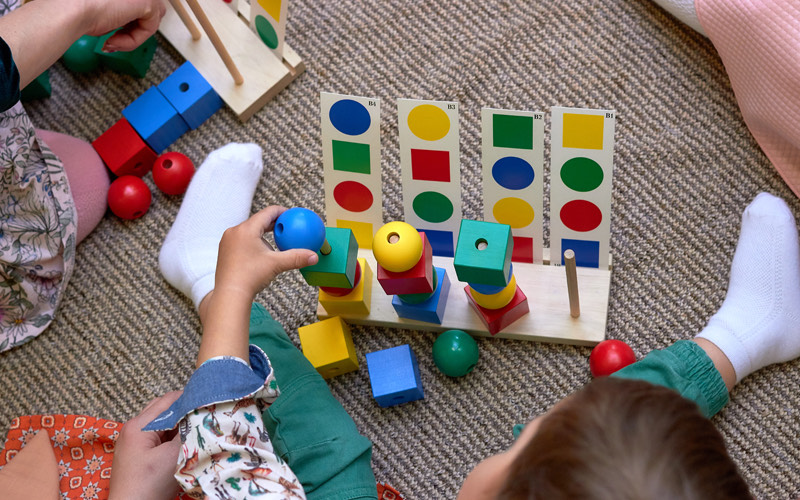
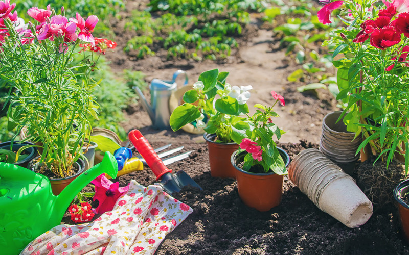
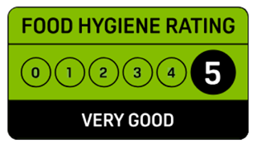

3 – 15 monthsBaby Room
A calm, cosy room that feels just like home, with a separate sleep room, routines built around your baby and their own garden.
Visit the Baby RoomNursery & pre-school in Watford
A happy, colourful home-from-home for babies, toddlers and pre-schoolers — with gardens for every age, food cooked fresh each day and a team who know every child by name.
Why Small World?
Breakfast, lunch, tea and snacks cooked here every day.
All dietary requirements and allergies looked after.
A caring team trained to keep little ones safe.
Each room has its own outdoor space to explore.
Planting, growing and plenty of muddy pies.
Photos, meals, naps and learning — straight to your phone.
A place to grow
Children move up through four rooms as they grow — each with its own team, routine and garden.

3 – 15 monthsA calm, cosy room that feels just like home, with a separate sleep room, routines built around your baby and their own garden.
Visit the Baby Room
15 months – 2 yearsBright and spacious, with its own private garden. Songs, stories and first friendships help toddlers grow in confidence.
Visit the Toddler Room
2 – 3 yearsFor curious minds and busy little hands: messy play, make-believe and gentle support with toilet training, rain or shine.
Visit the 2–3’s Room
3 – 5 yearsOur biggest room, with role play, maths and creative zones, termly topics and their own outdoor area. Ready for big school.
Visit the Pre-SchoolLearning through play
Every day is full of muddy adventures, messy play, stories and songs — carefully planned to help each child grow at their own pace.
Following the EYFS with Birth to 5 Matters and Development Matters.
How children learn here


Food & care

Awarded the highest possible food hygiene rating by the Food Standards Agency.
What families say
“I have 2 kids at Small World Nursery and both of them love staying there… I feel safe leaving them there because I know they are happy and well!”
“My one-year-old settled in well and enjoyed all the fun activities provided… The teachers are very much loving and caring.”
“As working parents, our days are made much easier being able to drop our child at a setting that not only she loves to attend, but that we fully trust and know she is safe and cared for.”
“My son has progressed well and enjoys the range of activities the nursery provides, particularly the outdoor activities like the mud kitchen and the allotment.”
“When we first began looking for a nursery for our first-born, we looked at many in the area. We are so glad that we chose Small World.”
Fees & funding
We welcome government-funded hours for 9-month-olds, 2, 3 and 4 year olds. Here’s the headline — we’re always happy to talk it through.
Up to 30 hours
For eligible working families.
15 or 30 hours
For eligible families. No deposit or registration fee for funded-only places.
15 or 30 hours
15 hours for all children, 30 for eligible working families.
Arrange a visit
The best way to get a feel for us is to pop in. A member of our management team will show you round the rooms and gardens and answer all your questions.
Website redesign concept by AQ Digital · not the official Small World Nursery website Concept by AQ Digital · not the official site